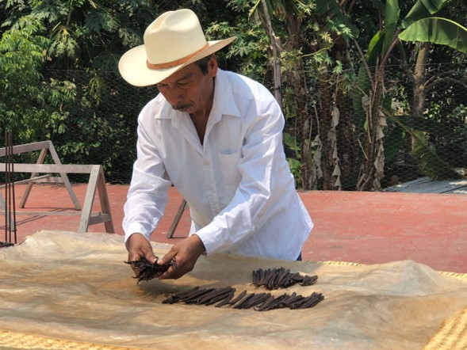

Articulo de Divulgación Cientifica
Dentro de nuestra formación en la Maestría en Ciencias Agropecuarias tuvimos la oportunidad de tener un curso de Comunicación Pública de la Ciencia, con el objetivo de aprender a compartir con distintos públicos nuestros proyectos cientificos. A continuación parte del proyecto final de la materia que fue la escritura de una articulo de divulgación y el archivo PDF de una estrategia de Comunicación Publica de la ciencia para un público especifico.
EL AROMA DEL MUNDO
Las orquídeas representan las plantas con flor más evolucionadas ya que se han adaptado a un sinnúmero de ambientes, polinizadores y sustratos para crecer, existen tanto las que crecen en tierra, como las que crecen en corteza de árboles, además establecieron relaciones con microorganismos como hongos micorrícicos que les permiten tener mejores nutrientes y protección contra enfermedades. Dentro de este grupo encontramos a la vainilla originaria de Mesoamérica, actualmente México es considerado centro de origen y domesticación de esta especie, la cuál tiene una importancia económica por su compuesto aromático tan característico llamado: vainillina.
Nacida del amor
La vainilla se ha utilizado desde épocas prehispánicas, y se le ha atribuido como “el aroma del mundo” debido a su importancia gastronómica-industrial. Se dice que su origen surgió a partir de una historia de amor entre dos jóvenes totonacos de distintas castas sociales, la joven Xanath era hija de un noble que vivía en el palacio de los nichos actualmente zona arqueológica Tajín, un día la joven se encontró con Zkatan un cazador del cuál quedo pérdidamente enamorada pero su relación nunca fue bien vista, ambos jóvenes huyeron a las montañas y ahí murieron, en ese mismo lugar creció una planta trepadora de la cuál brotaban unas flores amarillas con un exquisito olor, los sacerdotes decidieron llamarla “Xanath” y desde ese momento se utilizó en ceremonias religiosas y como moneda de cambio en truques.
Un aroma que se extingue
Los españoles fueron los primeros en extraer las plantas de vainilla y trataron de sembrarlas en Europa, sin embargo, esta planta solo crece en los trópicos con temperaturas cálidas y húmedas, actualmente Indonesia y Madagascar son los principales productores de vainilla, en México el cultivo se considera sobreexplotado y subutilizado, y a pesar de ser centro de origen de esta especie no competimos en el mercado internacional. La vainilla enfrenta grandes retos uno de los principales es gracias a su reproducción ya que, no tiene polinizadores naturales los productores tienen que polinizar la flor manualmente para producir las vainas y para tener más plantas utilizan esquejes, lo que quiere decir que cada planta es un clon y las hace propensas a enfermedades, sumado a esto el cambio en el uso de suelo en la zona, las personas ya no quieren plantar vainilla por su delicadeza y altos costos de producción, el cambio en las actividades económicas ya que las personas migran a las grandes ciudades para obtener mejores trabajos, el cambio climático que afecta dramáticamente a la caída de las vainas prematuras y como si no pareciera suficiente, la industria alimentaria ha introducido la vainillina sintética que tiene mejores rendimientos y bajos costos de producción todo lo anterior ha ido apagando este importante cultivo nacido en el corazón del Totonacapan.
Como un ave fénix con aroma dulce
Es difícil pensar que en tu heladería favorita no exista el sabor vainilla, y resulta aún más difícil imaginar que deje de existir el cultivo como lo conocemos y a pesar de toda la problemática social, económica y ambiental que enfrenta el cultivo, en el país existen diversos equipos de investigación entorno a la vainilla, su cultivo, reproducción en condiciones controladas y campo, la aplicación de herramientas biotecnológicas como bacterias benéficas que ayuden a combatir enfermedades, estudios de genéticos que ayuden a entender su reproducción sexual, así como estudios químicos que ayuden a mejorar la calidad de su extracto y se obtenga una mejor calidad de vainillina que compita en el mercado internacional. Es por ello que actualmente diversas instituciones gubernamentales y universidades como la Universidad Veracruzana están rescatando el cultivo de vainilla en el estado, promoviendo el uso de buenas prácticas agropecuarias como la agroecología para el aprovechamiento del espacio de siembra, el uso de fertilizantes órganicos que ayuden a mejorar la calidad de microoganismos en el suelo, y el apoyo a productores con la creación de asociaciones y cooperativas vainilleras en las que se generen ganancias justas que les permitan seguir con el cultivo a través de generaciones. Aunque es un camino largo que necesita de la acción conjunta de estado, productores y sociedad el cultivo de vainilla está resurgiendo de las cenizas como el ave fénix en el país como una alternativa o complemento en los cultivos de plantaciones como cítricos, café y árboles maderables, además es una especie protegida y regulada por las normas NOM- NORMA OFICIAL MEXICANA NOM-139-SCFI-2012 y la NOM-059-SEMARNAT-2010.
